Poetry Out Loud
Poetry Out Loud is a recitation contest organized by the National Endowment for the Arts and Poetry Foundation. Each year, students across the country select and prepare three poems from the Poetry Out Loud catalogue and compete for the title of national champion.
I was asked to redesign the contest website for Poetry Out Loud and modernize the design while improving the poem search and discovery feature.
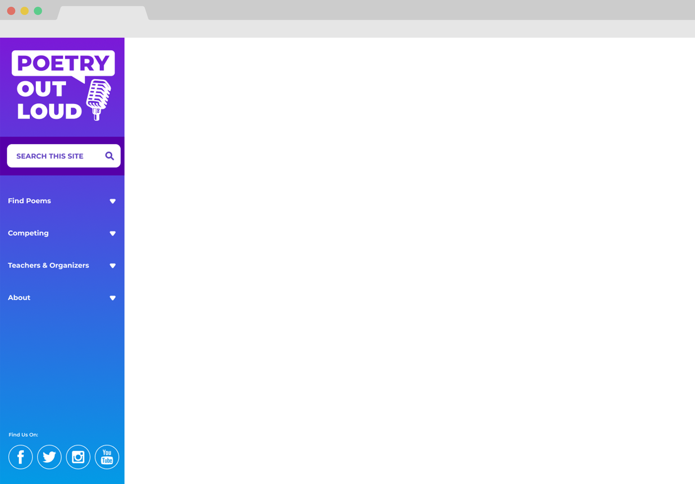
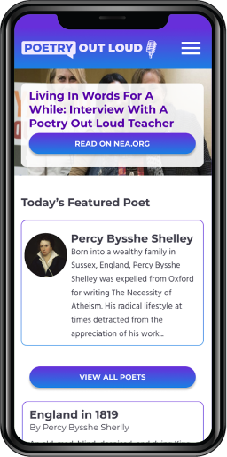
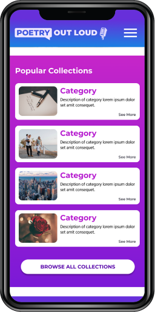
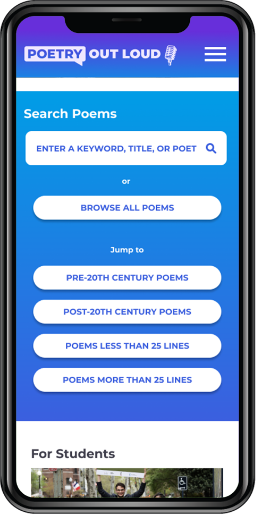
 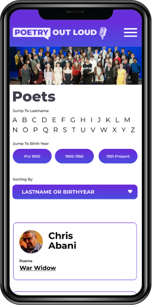
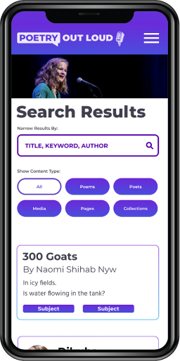
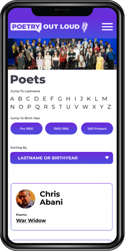
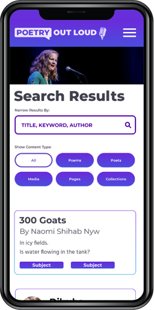
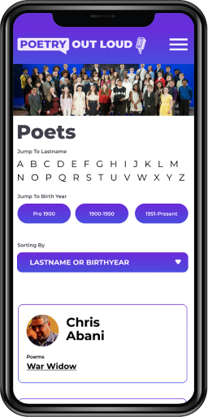
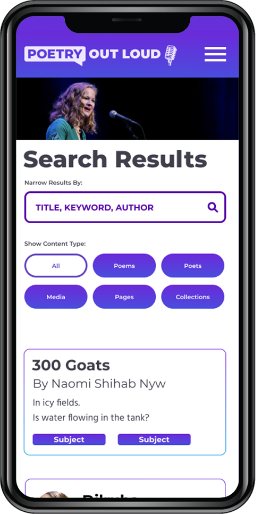
 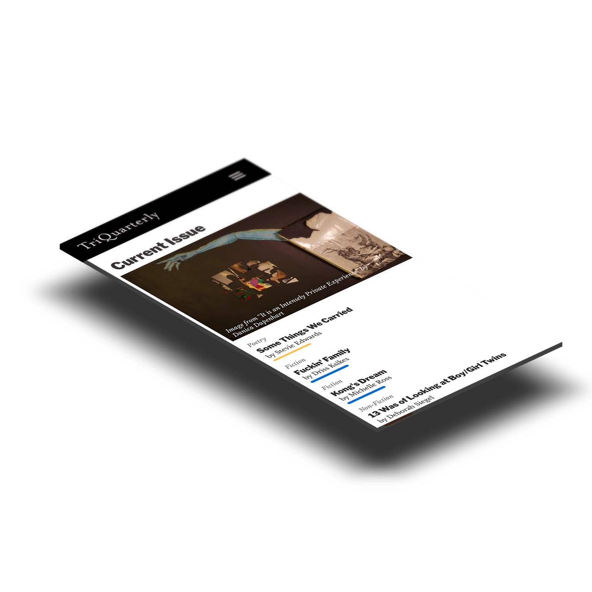
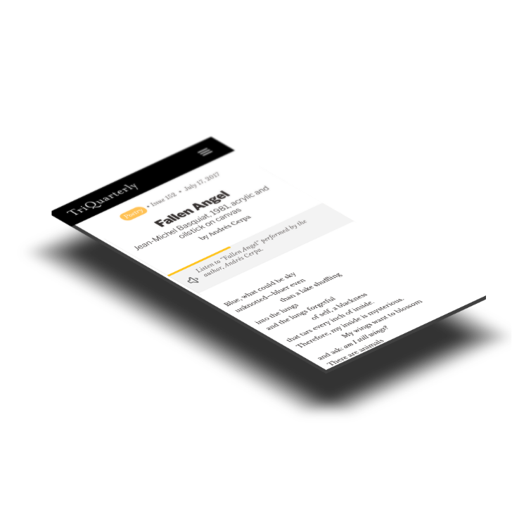
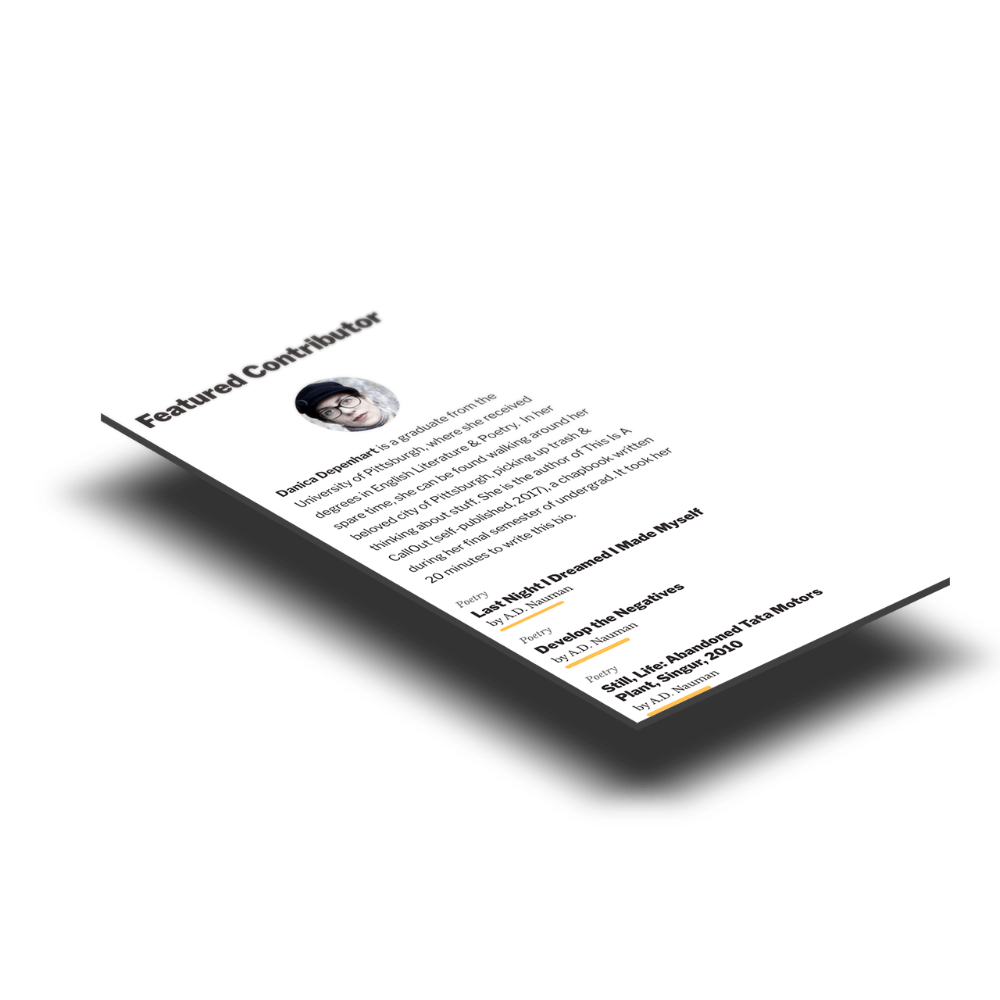
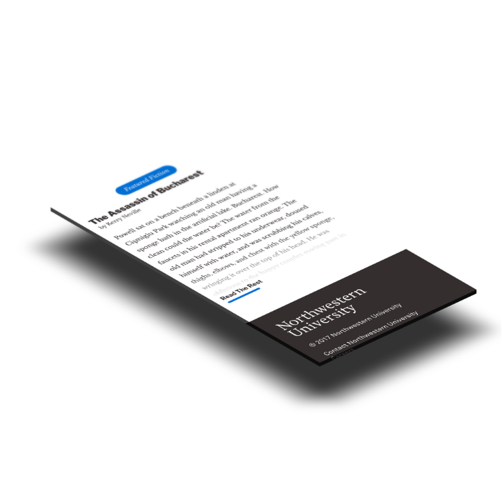
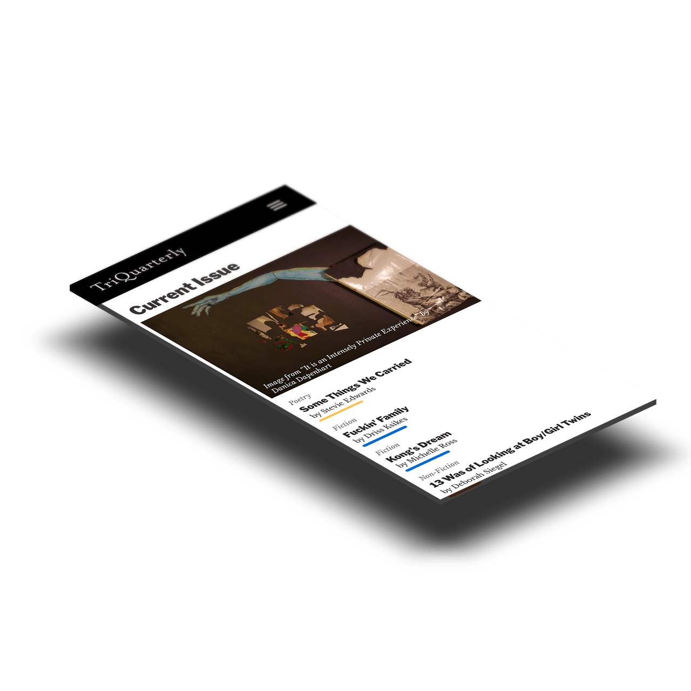
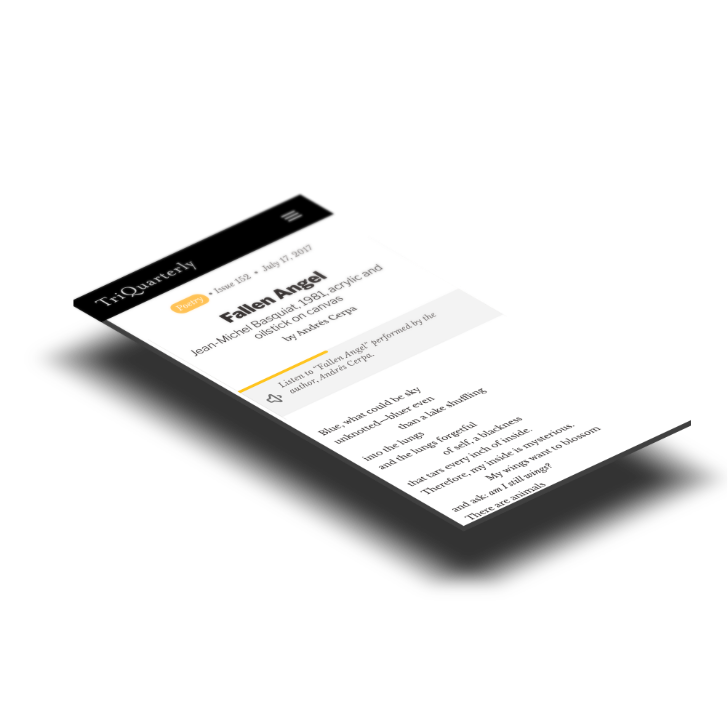
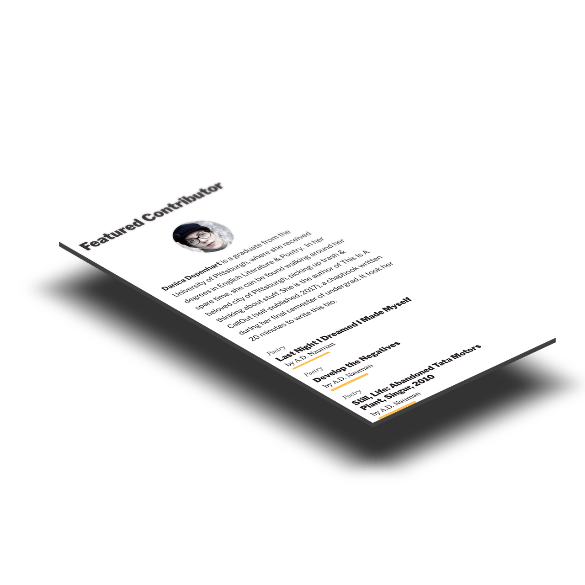
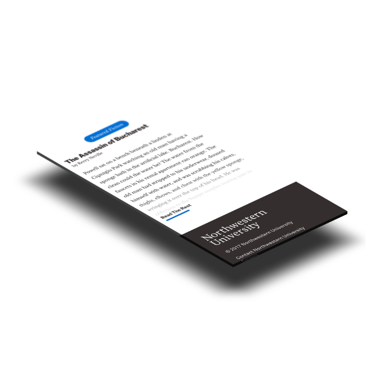